<title>Agent 2 · Claude đặt bàn</title>
<meta name="claude:viewport-fit-sides" content="cover">
<link rel="preconnect" href="https://fonts.googleapis.com"><link rel="preconnect" href="https://fonts.gstatic.com" crossorigin>
<link rel="stylesheet" href="https://fonts.googleapis.com/css2?family=Be+Vietnam+Pro:wght@400;500;600;700&family=JetBrains+Mono:wght@400;600&display=swap">
<style>
/* Bố cục: một cột đọc, bảng số đặt trong khung cuộn ngang riêng, ảnh từng bước xếp lưới. */
:root{
 --bg:#f6f7f6;--surface:#ffffff;--ink:#16201d;--muted:#5d6b66;--line:#dde3e0;
 --accent:#b3261e;--accent-soft:#fbe9e7;--ok:#1d7a4f;--ok-soft:#e3f3ea;--warn:#9a6400;--warn-soft:#fbf0d9;--bad:#b3261e;--bad-soft:#fbe4e1;
 --bar1:#16201d;--bar2:#c9d3cf;
 --f-body:"Be Vietnam Pro",system-ui,-apple-system,"Segoe UI",Roboto,sans-serif;--f-mono:"JetBrains Mono",ui-monospace,Menlo,Consolas,monospace;
}
@media (prefers-color-scheme:dark){:root:not([data-theme="light"]){
 --bg:#111614;--surface:#18201d;--ink:#e7ece9;--muted:#9aa8a2;--line:#2b3531;
 --accent:#ff8a7a;--accent-soft:#3a1f1c;--ok:#6fd3a0;--ok-soft:#173326;--warn:#f0c060;--warn-soft:#3a2f14;--bad:#ff8a7a;--bad-soft:#3d1f1b;
 --bar1:#e7ece9;--bar2:#3c4843;color-scheme:dark}}
:root[data-theme="dark"]{
 --bg:#111614;--surface:#18201d;--ink:#e7ece9;--muted:#9aa8a2;--line:#2b3531;
 --accent:#ff8a7a;--accent-soft:#3a1f1c;--ok:#6fd3a0;--ok-soft:#173326;--warn:#f0c060;--warn-soft:#3a2f14;--bad:#ff8a7a;--bad-soft:#3d1f1b;
 --bar1:#e7ece9;--bar2:#3c4843;color-scheme:dark}
body{background:var(--bg);color:var(--ink);font:15px/1.6 var(--f-body)}
.wrap{max-width:1120px;margin:0 auto;padding-left:max(16px,env(safe-area-inset-left,0px));padding-right:max(16px,env(safe-area-inset-right,0px))}
body::before{content:"";position:fixed;inset:0 0 auto;height:env(safe-area-inset-top,0px);z-index:10;background:var(--surface)}
.topnav{position:sticky;top:env(safe-area-inset-top,0px);z-index:5;background:var(--surface);border-bottom:1px solid var(--line)}
.nav-in{display:flex;gap:18px;align-items:center;overflow-x:auto;padding-block:10px;white-space:nowrap}
.brand{font-weight:700;margin-right:auto}
.topnav a,.site-tabs a{color:var(--muted);text-decoration:none;font-size:14px}
.topnav a:hover,.site-tabs a:hover{color:var(--accent)}
a:focus-visible,summary:focus-visible{outline:2px solid var(--accent);outline-offset:2px;border-radius:3px}
main{padding-block:28px 64px;display:flex;flex-direction:column;gap:48px}
section,header{display:flex;flex-direction:column;gap:14px;min-width:0;scroll-margin-top:64px}
h1{font-size:clamp(26px,4vw,38px);line-height:1.2;margin:0;text-wrap:balance;letter-spacing:-.01em}
h2{font-size:24px;margin:0;text-wrap:balance}
h3{font-size:17px;margin:6px 0 0}
.eyebrow{margin:0;text-transform:uppercase;letter-spacing:.08em;font-size:12px;color:var(--accent);font-weight:600}
.lede{margin:0;max-width:68ch;color:var(--muted);font-size:16px}
.sub,.note{margin:0;color:var(--muted);max-width:75ch}
.note{font-size:14px}
.mono{font-family:var(--f-mono);font-size:.92em;font-variant-ligatures:none}
.num{font-family:var(--f-mono);font-variant-numeric:tabular-nums}
.verdict{display:grid;grid-template-columns:repeat(auto-fit,minmax(260px,1fr));gap:12px}
.v-card{background:var(--surface);border:1px solid var(--line);border-radius:10px;padding:16px;display:flex;flex-direction:column;gap:4px;min-width:0}
.v-card:first-child{border-color:var(--ink);border-width:2px}
.v-card.out{background:transparent;border-style:dashed}
.v-k{font-size:12px;text-transform:uppercase;letter-spacing:.06em;color:var(--muted)}
.v-v{font-size:18px;font-weight:600;overflow-wrap:anywhere}
.v-card.out .v-v{text-decoration:line-through;text-decoration-color:var(--bad)}
.v-d{font-size:14px;color:var(--muted)}
.tbl{overflow-x:auto;background:var(--surface);border:1px solid var(--line);border-radius:8px}
table{border-collapse:collapse;width:100%;font-size:14px}
th,td{padding:8px 12px;border-bottom:1px solid var(--line);text-align:left;vertical-align:top}
th{font-weight:600;font-size:12px;color:var(--muted);text-transform:uppercase;letter-spacing:.04em;white-space:nowrap}
tbody tr:last-child td{border-bottom:0}
.r{text-align:right}
td small{color:var(--muted);font-size:11px}
.bad-t{color:var(--bad);font-weight:600}
.bars{background:var(--surface);border:1px solid var(--line);border-radius:8px;padding:16px;display:flex;flex-direction:column;gap:10px}
.bar-row{display:grid;grid-template-columns:minmax(120px,220px) 1fr 110px;gap:12px;align-items:center}
.bar-label{font-size:14px}
.bar-track{position:relative;height:22px;background:transparent;border-left:1px solid var(--line)}
.bar{position:absolute;left:0;height:100%;border-radius:0 3px 3px 0}
.bar.p95{background:var(--bar2)}
.bar.p50{background:var(--bar1);height:60%;top:20%}
.bar-val{font-size:13px;text-align:right}
.axis .bar-ticks{position:relative;height:16px;border-left:1px solid transparent}
.bar-ticks span{position:absolute;transform:translateX(-50%);font-size:11px;color:var(--muted);font-family:var(--f-mono)}
.legend{margin:0;font-size:12px;color:var(--muted);display:flex;gap:8px;align-items:center}
.key{display:inline-block;width:14px;height:10px;border-radius:2px}
.key.p50{background:var(--bar1)}.key.p95{background:var(--bar2);margin-left:10px}
.facts{display:grid;grid-template-columns:repeat(auto-fit,minmax(180px,1fr));gap:12px}
.facts div{display:flex;flex-direction:column;border-top:2px solid var(--ink);padding-top:8px}
.f-v{font-size:26px;font-weight:600}
.f-k{font-size:13px;color:var(--muted)}
.fixes{display:grid;grid-template-columns:repeat(auto-fit,minmax(280px,1fr));gap:12px}
.fix{background:var(--surface);border:1px solid var(--line);border-radius:10px;padding:16px;display:flex;flex-direction:column;gap:10px;min-width:0}
.fix h3{margin:0}
.fix dl{margin:0;display:grid;gap:4px}
.fix dt{font-size:12px;text-transform:uppercase;letter-spacing:.05em;color:var(--muted)}
.fix dd{margin:0 0 6px}
.fix-n{display:flex;flex-wrap:wrap;gap:6px 14px;font-size:13px;color:var(--muted);border-top:1px solid var(--line);padding-top:10px}
.fix-n b{color:var(--ink);font-size:15px}
.site-tabs{display:flex;flex-wrap:wrap;gap:8px}
.site-tabs a{border:1px solid var(--line);border-radius:999px;padding:4px 12px;background:var(--surface)}
.site{display:flex;flex-direction:column;gap:10px;scroll-margin-top:64px;padding-top:10px;border-top:1px solid var(--line)}
.site-head{display:flex;flex-wrap:wrap;gap:4px 14px;align-items:baseline}
.site-head h3{margin:0;font-size:20px}
.url{color:var(--muted);font-size:12px;overflow-wrap:anywhere}
.site-meta{margin:0;font-size:14px;color:var(--muted)}
.site-meta b{color:var(--ink)}
.pill{display:inline-block;font-size:12px;font-weight:600;padding:1px 9px;border-radius:999px;margin-right:6px}
.pill.ok{background:var(--ok-soft);color:var(--ok)}.pill.warn{background:var(--warn-soft);color:var(--warn)}.pill.bad{background:var(--bad-soft);color:var(--bad)}
.steps{display:grid;grid-template-columns:repeat(auto-fill,minmax(250px,1fr));gap:12px}
.step{margin:0;background:var(--surface);border:1px solid var(--line);border-radius:8px;overflow:hidden;display:flex;flex-direction:column;min-width:0}
.step img{display:block;width:100%;aspect-ratio:1280/900;object-fit:cover;object-position:top;max-width:100%;background:var(--line)}
.step figcaption{padding:8px 10px 10px;display:grid;grid-template-columns:auto 1fr;gap:2px 8px;font-size:12px}
.step-n{font-weight:600;color:var(--accent)}
.step-t{color:var(--muted);text-align:right}
.step-a{grid-column:1/-1;margin:0;font-family:var(--f-mono);font-variant-ligatures:none;font-size:11px;color:var(--muted);overflow-wrap:anywhere}
.step ul{grid-column:1/-1;margin:2px 0 0;padding-left:16px;overflow-wrap:anywhere}
.bad-run{background:var(--bad-soft);border-radius:8px;padding:10px 12px}
.bad-run summary{cursor:pointer;font-size:14px}
.bad-run .steps{margin-top:10px}
.todo{margin:0;padding-left:20px;max-width:80ch;display:flex;flex-direction:column;gap:6px}
.foot{font-size:13px;color:var(--muted);margin:8px 0 0}
@media (max-width:600px){.bar-row{grid-template-columns:1fr 90px}.bar-label{grid-column:1/-1}.bar-track{grid-column:1}}
.explain{display:grid;grid-template-columns:repeat(auto-fit,minmax(230px,1fr));gap:12px}
.explain>div{background:var(--surface);border:1px solid var(--line);border-radius:10px;padding:14px 16px;min-width:0}
.explain h3{margin:0 0 4px;font-size:15px}
.explain p{margin:0;font-size:14px;color:var(--muted)}
.explain p b{color:var(--ink)}
.flow{list-style:none;margin:0;padding:0;display:grid;grid-template-columns:repeat(auto-fit,minmax(250px,1fr));gap:12px;counter-reset:f}
.flow li{counter-increment:f;position:relative;padding:14px 16px 14px 52px;border:1px solid var(--line);border-radius:10px;background:var(--surface);font-size:14px;color:var(--muted);min-width:0}
.flow li::before{content:counter(f);position:absolute;left:14px;top:14px;width:26px;height:26px;border-radius:50%;background:var(--ink);color:var(--surface);display:grid;place-items:center;font-weight:700;font-size:13px}
.flow li>b:first-of-type{color:var(--ink);display:block;margin-bottom:2px}
.flow li b{color:var(--ink)}
.flow-k{display:block;font-size:11px;text-transform:uppercase;letter-spacing:.06em;color:var(--accent);font-weight:600}
.glossary{display:grid;grid-template-columns:minmax(140px,220px) 1fr;gap:6px 16px;margin:0;font-size:14px;background:var(--surface);border:1px solid var(--line);border-radius:10px;padding:14px 16px}
.glossary dt{font-weight:600}
.glossary dd{margin:0;color:var(--muted)}
.facts .zero .f-v{color:var(--ok)}
.v-d{margin:0}
.v-d b{color:var(--ink)}
.step-top{grid-column:1/-1;display:flex;justify-content:space-between}
.step figcaption{display:flex;flex-direction:column;gap:6px}
.step-a{font-family:var(--f-body)!important;font-size:13px!important;color:var(--ink)!important}
.kv{display:grid;grid-template-columns:auto 1fr;gap:1px 10px;margin:0;font-size:12px}
.kv dt{color:var(--muted)}
.kv dd{margin:0;overflow-wrap:anywhere}
.code summary{cursor:pointer;font-size:11px;color:var(--muted)}
.code code{display:block;margin-top:4px;font-family:var(--f-mono);font-variant-ligatures:none;font-size:10.5px;color:var(--muted);overflow-wrap:anywhere;white-space:pre-wrap}
@media (max-width:600px){.glossary{grid-template-columns:1fr}.glossary dd{margin-bottom:6px}}
.th-sub{display:block;font-weight:400;text-transform:none;letter-spacing:0;font-size:11px;color:var(--muted);white-space:normal;margin-top:2px}
.td-sub{display:block;font-size:12px;color:var(--muted);margin-top:2px;max-width:46ch}
.ways{display:grid;grid-template-columns:minmax(150px,200px) 1fr;gap:4px 14px;margin:0;font-size:13px}
.ways dt{font-weight:600}.ways dd{margin:0;color:var(--muted)}
@media (max-width:600px){.ways{grid-template-columns:1fr}.ways dd{margin-bottom:6px}}
@media (prefers-reduced-motion:reduce){*{scroll-behavior:auto}}
</style>
<nav class="topnav"><div class="wrap nav-in"><span class="brand">Agent 2 · Claude đặt bàn</span>
<a href="#ket-luan">Kết luận</a><a href="#cach-do">Cách đo</a><a href="#haiku">Haiku tự điền</a><a href="#cache">Script ghi nhớ</a><a href="#script-v2">Sửa script</a><a href="#tung-web">Từng web</a><a href="#luu-y">Lưu ý</a></div></nav>
<main class="wrap">
<header class="head" id="ket-luan">
<p class="eyebrow">Module chọn công nghệ · agent đặt bàn · trục LLM &amp; cache</p>
<h1>Claude Haiku 5.5 tự đặt bàn được, và một script ghi nhớ giúp lần sau nhanh hơn 5.3 lần</h1>
<p class="lede">Agent dùng Claude Haiku 5.5 đọc trang đặt bàn và tự điền form trên 5 web nhà hàng thật. Lần đầu ở mỗi web, Haiku làm từ đầu. Sau một lần làm đúng, cách làm được ghi lại thành script. Những lần sau chỉ cần chạy script, không phải hỏi lại Haiku.</p>
<div class="verdict">
 <div class="v-card"><span class="v-k">Model chọn</span><span class="v-v">Claude Haiku 5.5</span>
  <p class="v-d">Điền đúng <b class="num">23/23</b> lượt chấm được. Mỗi lần điền thường mất khoảng <b class="num">45.1 giây</b> và tốn khoảng <b class="num">$0.0045</b>.</p></div>
 <div class="v-card"><span class="v-k">Cách lưu cho lần sau</span><span class="v-v">Chạy script trực tiếp</span>
  <p class="v-d">Đúng <b class="num">25/25</b> lượt, thường mất <b class="num">8.5 giây</b>, không tốn tiền gọi Claude. Có lời sau <b class="num">3–10</b> lần đặt ở cùng một web.</p></div>
</div>
<p class="note">Đã dùng <b class="num">$1.01</b> trong ngân sách $1,80 cho Claude. Claude Sonnet 5.5 chưa được đo.</p>
</header>
<section id="cach-do"><h2>Đã đo như thế nào</h2>
<div class="explain">
 <div><h3>Ở đâu</h3><p>5 web đặt bàn thật: Lẩu Phan, Tòng, Chao Xian, Lẩu Wang, King BBQ. Mỗi web đo 5 vòng, ngày 24/11.</p></div>
 <div><h3>Yêu cầu</h3><p>Đặt bàn cho <b>3 người, ngày mai, 18:00</b>, tên <span class="mono">Khach Thu Nghiem</span>, số điện thoại <span class="mono">0000000000</span> (khách giả).</p></div>
 <div><h3>An toàn</h3><p>Agent điền form rồi <b>dừng trước nút Đặt bàn</b>. Một lớp chặn trong trình duyệt chặn mọi yêu cầu chứa thông tin khách gửi ra ngoài. Không có đơn nào được gửi tới nhà hàng.</p></div>
 <div><h3>Chấm điểm</h3><p>Sau mỗi lượt, chương trình đọc lại các ô trên form và so với yêu cầu. Không tin lời agent tự báo.</p></div>
</div>
<h3>Hai cách điền form</h3>
<ol class="flow">
 <li><span class="flow-k">Lần đầu ở một web</span><b>Haiku tự làm từ đầu.</b> Haiku xem trang, quyết định bấm và gõ gì, từng bước một. Thường gọi Claude 6 lần mỗi lượt.</li>
 <li><span class="flow-k">Khi Haiku làm đúng</span><b>Ghi lại thành script.</b> Các thao tác được viết thành một script, trong đó ngày, giờ, số người, tên và số điện thoại là chỗ trống để điền dữ liệu mới.</li>
 <li><span class="flow-k">Những lần sau</span><b>Chạy script, không gọi Claude.</b> Script tự kiểm tra lại form trước khi kết thúc. Gặp trường hợp không làm được (ví dụ web không có giờ khách muốn), script <b>từ chối</b> và giao lại cho Haiku.</li>
</ol>
<dl class="glossary">
 <dt>Đúng</dt><dd>Mọi ô trên form khớp yêu cầu.</dd>
 <dt>Điền sai</dt><dd>Form có ô không khớp, ví dụ sai giờ. Đây là lỗi nặng nhất, vì khách sẽ nhận một đơn sai.</dd>
 <dt>Từ chối</dt><dd>Script biết mình không làm được nên dừng và giao lại cho Haiku. Không phải lỗi.</dd>
 <dt>Không chấm được</dt><dd>Chương trình chấm không đọc được ô trên form, nên không biết đúng hay sai. Không tính vào tỷ lệ đúng.</dd>
 <dt>Thời gian điển hình (p50)</dt><dd>Một nửa số lần xong nhanh hơn mức này.</dd>
 <dt>Lần chậm (p95)</dt><dd>Gần như mọi lần xong trước mức này. Với 25 lần đo, con số này gần bằng lần chậm nhất.</dd>
</dl></section>
<section id="haiku"><h2>Haiku tự điền</h2><p class="sub">Haiku đọc trang và tự quyết định bấm, gõ gì ở từng bước. Đây là cách dùng cho lần đầu ở một web.</p>
<div class="facts">
 <div><span class="f-v num">23/23</span><span class="f-k">lượt đúng trên số lượt chấm được (2 lượt không chấm được, xem Lưu ý)</span></div>
 <div><span class="f-v num">45.1 s</span><span class="f-k">thời gian điển hình; lần chậm 83.5 s</span></div>
 <div><span class="f-v num">$0.0045</span><span class="f-k">chi phí Claude cho một lượt đúng</span></div>
 <div><span class="f-v num">6</span><span class="f-k">lần gọi Claude trong một lần điền (điển hình), mất khoảng 15.5 s chờ Claude trả lời</span></div>
</div>
<p class="sub">Phần thời gian còn lại là khởi động agent và chờ trang web tải. Haiku cũng qua bài kiểm tra mã OTP trên trang thử: dừng lại hỏi người đúng lúc <b class="num">10/10</b> lần, không tự đoán mã.</p>
<div class="tbl"><table><thead><tr><th>Web</th><th class=r>Điền đúng<span class=th-sub>số lần đúng / số lần chấm được</span></th><th class=r>Thời gian điển hình<span class=th-sub>một nửa số lần nhanh hơn</span></th><th class=r>Lần chậm nhất<span class=th-sub>trong các lần điền đúng</span></th><th class=r>Chi phí Claude<span class=th-sub>trung bình mỗi lần</span></th></tr></thead><tbody>
<tr><td>Lẩu Phan</td><td class="r num">5/5</td><td class="r num">58.1 s</td><td class="r num">83.5 s</td><td class="r num">$0.0031</td></tr>
<tr><td>Tòng</td><td class="r num">5/5</td><td class="r num">41.2 s</td><td class="r num">45.1 s</td><td class="r num">$0.0031</td></tr>
<tr><td>Chao Xian</td><td class="r num">5/5</td><td class="r num">37.8 s</td><td class="r num">48.3 s</td><td class="r num">$0.0032</td></tr>
<tr><td>Lẩu Wang</td><td class="r num">3/3 <small>+2 không chấm được</small></td><td class="r num">70.0 s</td><td class="r num">91.7 s</td><td class="r num">$0.0074</td></tr>
<tr><td>King BBQ</td><td class="r num">5/5</td><td class="r num">42.0 s</td><td class="r num">77.1 s</td><td class="r num">$0.0038</td></tr>
</tbody></table></div></section>
<section id="cache"><h2>Script ghi nhớ cho lần sau</h2>
<p class="sub">Cùng một yêu cầu đặt bàn, điền theo 3 cách:</p>
<div class="bars" role="img" aria-label="Thời gian p50 và p95 mỗi cách chạy, giây"><div class="bar-row"><span class="bar-label">Haiku tự điền</span><div class="bar-track"><div class="bar p95" style="width:83.5%"></div><div class="bar p50" style="width:45.1%"></div></div><span class="bar-val num">45.1 / 83.5 s</span></div><div class="bar-row"><span class="bar-label">Chạy script, qua agent</span><div class="bar-track"><div class="bar p95" style="width:40.1%"></div><div class="bar p50" style="width:22.6%"></div></div><span class="bar-val num">22.6 / 40.1 s</span></div><div class="bar-row"><span class="bar-label">Chạy script trực tiếp</span><div class="bar-track"><div class="bar p95" style="width:16.4%"></div><div class="bar p50" style="width:8.5%"></div></div><span class="bar-val num">8.5 / 16.4 s</span></div><div class="bar-row axis"><span class="bar-label"></span><div class="bar-ticks"><span style="left:0.0%">0</span><span style="left:25.0%">25</span><span style="left:50.0%">50</span><span style="left:75.0%">75</span><span style="left:100.0%">100</span></div><span class="bar-val"></span></div><p class="legend"><span class="key p50"></span>thời gian điển hình <span class="key p95"></span>lần chậm (giây, chỉ tính lần điền đúng)</p></div>
<div class="tbl"><table><thead><tr><th>Cách điền form<span class=th-sub>làm gì</span></th><th class=r>Điền đúng<span class=th-sub>số lần đúng / số lần chấm được</span></th><th class=r>Thời gian điển hình<span class=th-sub>một nửa số lần nhanh hơn</span></th><th class=r>Lần chậm<span class=th-sub>gần như mọi lần nhanh hơn</span></th><th class=r>Chi phí Claude<span class=th-sub>trung bình mỗi lần</span></th></tr></thead><tbody>
<tr><td><b>Haiku tự điền</b><span class="td-sub">Haiku đọc trang và tự quyết định từng bước. Có gọi Claude.</span></td><td class="r num">23/23</td><td class="r num">45.1 s</td><td class="r num">83.5 s</td><td class="r num">$0.0041</td></tr>
<tr><td><b>Chạy script, qua agent</b><span class="td-sub">Chạy lại script đã ghi, nhưng vẫn khởi động agent browser-use. Không gọi Claude.</span></td><td class="r num">25/25</td><td class="r num">22.6 s</td><td class="r num">40.1 s</td><td class="r num">$0.0000</td></tr>
<tr><td><b>Chạy script trực tiếp</b><span class="td-sub">Chạy lại script đã ghi thẳng trên trình duyệt, bỏ qua agent. Không gọi Claude, nhanh nhất.</span></td><td class="r num">25/25</td><td class="r num">8.5 s</td><td class="r num">16.4 s</td><td class="r num">$0.0000</td></tr>
</tbody></table></div>
<h3>Khi dữ liệu khách thay đổi</h3>
<p class="sub">Script được thử với 58 yêu cầu khác nhau (số người, giờ, ngày, tên, chi nhánh khác), mỗi web 10–12 yêu cầu, gồm cả yêu cầu cố ý không hợp lệ như 03:00 sáng.</p>
<div class="facts">
 <div><span class="f-v num">48</span><span class="f-k">yêu cầu điền đúng</span></div>
 <div><span class="f-v num">10</span><span class="f-k">yêu cầu script từ chối và giao lại cho Haiku (giờ web không có)</span></div>
 <div class="zero"><span class="f-v num">0</span><span class="f-k">yêu cầu điền sai mà không báo</span></div>
 <div><span class="f-v num">4/5</span><span class="f-k">lần Haiku cứu được khi script hỏng (thử bằng cách làm hỏng trang)</span></div>
</div>
<h3>Bao lâu thì có lời</h3>
<p class="sub">Ghi nhớ có giá: phải cho Haiku làm một lần rồi sinh script. Sau đó mỗi lần dùng script tiết kiệm được tiền gọi Claude. Ví dụ Lẩu Phan: ghi nhớ tốn <b class="num">$0.0089</b>, mỗi lần dùng script tiết kiệm <b class="num">$0.0031</b>, nên từ lần đặt thứ <b class="num">3</b> là có lời.</p>
<div class="tbl"><table><thead><tr><th>Web</th><th class=r>Chi phí ghi nhớ<span class=th-sub>Haiku làm 1 lần + viết script</span></th><th class=r>Tiết kiệm mỗi lần<span class=th-sub>so với Haiku tự điền</span></th><th class=r>Có lời từ lần đặt thứ</th></tr></thead><tbody>
<tr><td>Lẩu Phan</td><td class="r num">$0.0089</td><td class="r num">$0.0031</td><td class="r num"><strong>3</strong></td></tr>
<tr><td>Tòng</td><td class="r num">$0.0296</td><td class="r num">$0.0031</td><td class="r num"><strong>10</strong></td></tr>
<tr><td>Chao Xian</td><td class="r num">$0.0089</td><td class="r num">$0.0032</td><td class="r num"><strong>3</strong></td></tr>
<tr><td>Lẩu Wang</td><td class="r num">$0.0129</td><td class="r num">$0.0061</td><td class="r num"><strong>3</strong></td></tr>
<tr><td>King BBQ</td><td class="r num">$0.0132</td><td class="r num">$0.0038</td><td class="r num"><strong>4</strong></td></tr>
</tbody></table></div></section>
<section id="script-v2"><h2>Sửa script sau khi xem ảnh</h2>
<p class="sub">Ngày 25/11, chạy lại script và chụp ảnh từng bước. Ảnh cho thấy 3 script do Haiku viết còn lỗi. Đã sửa tay thành bản v2; bản gốc (v1) vẫn được giữ. Các số ở trên là của bản v1.</p>
<div class="fixes">
<article class="fix"><h3>Lẩu Phan</h3><dl><dt>Lỗi ở bản v1</dt><dd>Có lần giờ bị xóa về “Chọn” sau khi đã chọn 18:00. Web tải lại danh sách giờ chậm, script đã kết thúc trước đó.</dd><dt>Bản v2 sửa</dt><dd>Sau khi điền xong, script chờ ô Giờ đứng yên 2 giây. Nếu giờ bị xóa thì chọn lại.</dd></dl><div class="fix-n"><span>v1 đúng <b class="num">9/9</b></span><span>v2 đúng <b class="num">5/5</b></span><span>v2 điền sai <b class="num">0/12</b> yêu cầu khác</span></div></article>
<article class="fix"><h3>King BBQ</h3><dl><dt>Lỗi ở bản v1</dt><dd>Script chọn nhà hàng khi danh sách nhà hàng chưa tải xong, không tìm thấy nên từ chối.</dd><dt>Bản v2 sửa</dt><dd>Chờ danh sách nhà hàng tải xong rồi mới chọn.</dd></dl><div class="fix-n"><span>v1 đúng <b class="num">6/9</b></span><span>v2 đúng <b class="num">5/5</b></span><span>v2 điền sai <b class="num">0/12</b> yêu cầu khác</span></div></article>
<article class="fix"><h3>Lẩu Wang</h3><dl><dt>Lỗi ở bản v1</dt><dd>Giá trị trong form đúng, nhưng trên màn hình ô Giờ và ô Cơ sở vẫn hiện “Giờ”, “Chọn cơ sở”, như chưa chọn.</dd><dt>Bản v2 sửa</dt><dd>Chọn bằng cách bấm vào ô hiển thị như người dùng, và kiểm tra cả chữ hiện trên màn hình.</dd></dl><div class="fix-n"><span>v1 đúng <b class="num">4/4</b></span><span>v2 đúng <b class="num">5/5</b></span><span>v2 điền sai <b class="num">0/12</b> yêu cầu khác</span></div></article>
</div></section>
<section id="tung-web"><h2>Từng web, từng bước</h2><p class="sub">Ảnh chụp mỗi khi form thay đổi. Ô viền đỏ là ô vừa được điền. Ảnh cuối chụp sau 3 giây chờ trang ổn định, đúng trạng thái được chấm. Bấm vào ảnh để xem cỡ lớn.</p>
<div class="site-tabs"><a href="#lauphan">Lẩu Phan</a><a href="#tong">Tòng</a><a href="#chaoxian">Chao Xian</a><a href="#lauwang">Lẩu Wang</a><a href="#kingbbq">King BBQ</a></div>
<article class="site" id="lauphan"><div class="site-head"><h3>Lẩu Phan</h3><a class="mono url" href="https://lauphan.com/dat-ban?type=lauphan" target="_blank" rel="noopener">https://lauphan.com/dat-ban?type=lauphan</a></div><p class="site-meta"><span class="pill ok">đúng</span> Script bản <b>v2</b> điền xong trong <b class="num">12.5 giây</b>. Chạy lại bản này <b class="num">5</b> lần, đúng <b class="num">5</b> lần. Không có thông tin khách nào bị gửi ra ngoài.</p>
<div class="steps"><figure class="step"><a href="img/real_lauphan_main_01.jpg" target="_blank" rel="noopener"></a><figcaption><div class="step-top"><span class="step-n num">Bước 1</span><span class="step-t num">giây thứ 4.9</span></div><p class="step-a">Mở trang đặt bàn. Form còn giá trị mặc định, chưa điền gì.</p><dl class=kv><dt>Cơ sở</dt><dd>Chọn</dd><dt>Số người</dt><dd>1</dd><dt>Ngày</dt><dd>Hôm nay</dd><dt>Giờ</dt><dd>Chọn</dd></dl><details class="code"><summary>Lệnh script</summary><code>Trang tải xong, script chưa điền gì (giá trị mặc định)</code></details></figcaption></figure><figure class="step"><a href="img/real_lauphan_main_02.jpg" target="_blank" rel="noopener"></a><figcaption><div class="step-top"><span class="step-n num">Bước 2</span><span class="step-t num">giây thứ 5.2</span></div><p class="step-a">Chọn / điền cơ sở Lẩu Phan Hoàng Quốc Việt.</p><details class="code"><summary>Lệnh script</summary><code>js((()=&gt;{const s=document.getElementById(&quot;selectCoso&quot;); s.value=&quot;5b86181d441ef51234e765da&quot;; s.dispatchEvent(new Event(&#x27;inp…)</code></details></figcaption></figure><figure class="step"><a href="img/real_lauphan_main_03.jpg" target="_blank" rel="noopener">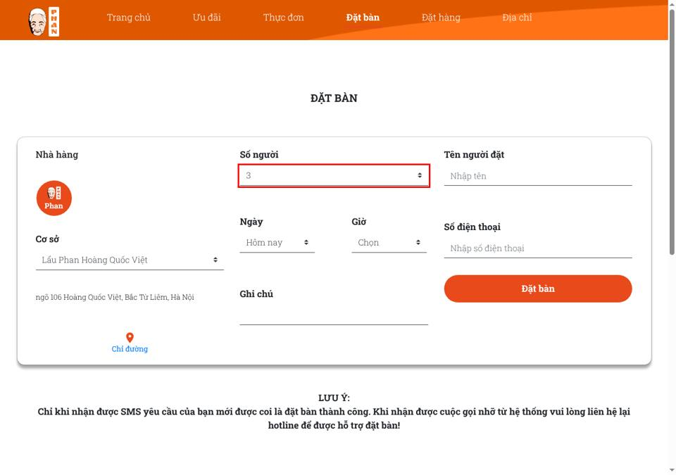</a><figcaption><div class="step-top"><span class="step-n num">Bước 3</span><span class="step-t num">giây thứ 6.5</span></div><p class="step-a">Chọn / điền số người 3.</p><details class="code"><summary>Lệnh script</summary><code>js((()=&gt;{const s=document.getElementById(&quot;selectSoNguoi&quot;); s.value=&quot;3&quot;; s.dispatchEvent(new Event(&#x27;input&#x27;,{bubbles:true}))…)</code></details></figcaption></figure><figure class="step"><a href="img/real_lauphan_main_04.jpg" target="_blank" rel="noopener"></a><figcaption><div class="step-top"><span class="step-n num">Bước 4</span><span class="step-t num">giây thứ 8.0</span></div><p class="step-a">Chọn / điền ngày Ngày mai.</p><details class="code"><summary>Lệnh script</summary><code>js((()=&gt;{const s=document.getElementById(&quot;selectDay&quot;); s.value=&quot;1&quot;; s.dispatchEvent(new Event(&#x27;input&#x27;,{bubbles:true})); s.…)</code></details></figcaption></figure><figure class="step"><a href="img/real_lauphan_main_05.jpg" target="_blank" rel="noopener">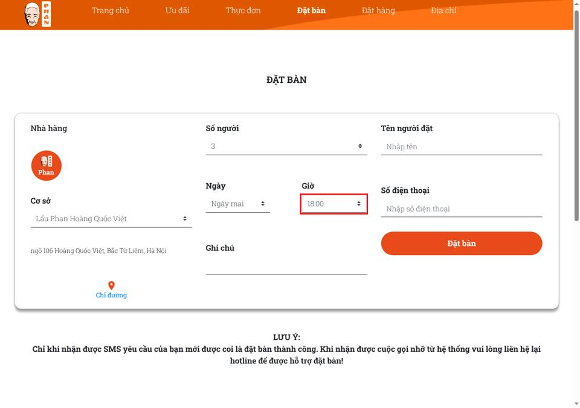</a><figcaption><div class="step-top"><span class="step-n num">Bước 5</span><span class="step-t num">giây thứ 9.3</span></div><p class="step-a">Chọn / điền giờ 18:00.</p><details class="code"><summary>Lệnh script</summary><code>js((()=&gt;{const s=document.getElementById(&quot;selectHour&quot;); s.value=&quot;18:00:00&quot;; s.dispatchEvent(new Event(&#x27;input&#x27;,{bubbles:tru…)</code></details></figcaption></figure><figure class="step"><a href="img/real_lauphan_main_06.jpg" target="_blank" rel="noopener"></a><figcaption><div class="step-top"><span class="step-n num">Bước 6</span><span class="step-t num">giây thứ 9.6</span></div><p class="step-a">Gõ tên khách Khach Thu Nghiem.</p><details class="code"><summary>Lệnh script</summary><code>type_text(Khach Thu Nghiem)</code></details></figcaption></figure><figure class="step"><a href="img/real_lauphan_main_07.jpg" target="_blank" rel="noopener"></a><figcaption><div class="step-top"><span class="step-n num">Bước 7</span><span class="step-t num">giây thứ 9.9</span></div><p class="step-a">Gõ số điện thoại 0000000000.</p><details class="code"><summary>Lệnh script</summary><code>type_text(0000000000)</code></details></figcaption></figure><figure class="step"><a href="img/real_lauphan_main_08.jpg" target="_blank" rel="noopener"></a><figcaption><div class="step-top"><span class="step-n num">Bước 8</span><span class="step-t num">giây thứ 15.7</span></div><p class="step-a">Kết thúc: form đã điền đủ. Dừng trước nút Đặt bàn, không gửi.</p><dl class=kv><dt>Cơ sở</dt><dd>Lẩu Phan Hoàng Quốc Việt</dd><dt>Số người</dt><dd>3</dd><dt>Ngày</dt><dd>Ngày mai</dd><dt>Giờ</dt><dd>18:00</dd><dt>Tên khách</dt><dd>Khach Thu Nghiem</dd><dt>Số điện thoại</dt><dd>0000000000</dd></dl><details class="code"><summary>Lệnh script</summary><code>Kết thúc script, chờ 3 giây cho trang ổn định: trạng thái được chấm. Dừng trước nút đặt</code></details></figcaption></figure></div>
</article>
<article class="site" id="tong"><div class="site-head"><h3>Tòng</h3><a class="mono url" href="https://tong.com.vn/dat-ban" target="_blank" rel="noopener">https://tong.com.vn/dat-ban</a></div><p class="site-meta"><span class="pill ok">đúng</span> Script bản <b>v1</b> điền xong trong <b class="num">10.0 giây</b>. Chạy lại bản này <b class="num">4</b> lần, đúng <b class="num">4</b> lần. Không có thông tin khách nào bị gửi ra ngoài.</p>
<div class="steps"><figure class="step"><a href="img/real_tong_main_01.jpg" target="_blank" rel="noopener"></a><figcaption><div class="step-top"><span class="step-n num">Bước 1</span><span class="step-t num">giây thứ 7.7</span></div><p class="step-a">Mở trang đặt bàn. Form còn giá trị mặc định, chưa điền gì.</p><dl class=kv><dt>Cơ sở</dt><dd>Tòng Livehouse</dd><dt>Số người</dt><dd>1</dd><dt>Ngày</dt><dd>Hôm nay</dd><dt>Giờ</dt><dd>Chọn</dd></dl><details class="code"><summary>Lệnh script</summary><code>Trang tải xong, script chưa điền gì (giá trị mặc định)</code></details></figcaption></figure><figure class="step"><a href="img/real_tong_main_02.jpg" target="_blank" rel="noopener">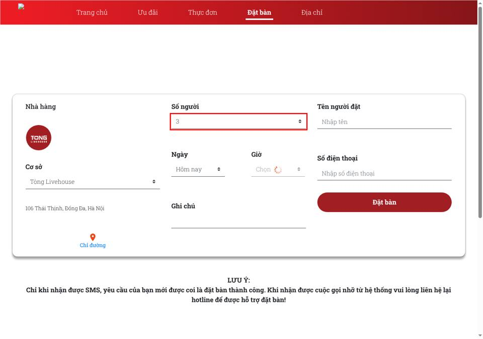</a><figcaption><div class="step-top"><span class="step-n num">Bước 2</span><span class="step-t num">giây thứ 8.1</span></div><p class="step-a">Chọn / điền số người 3.</p><details class="code"><summary>Lệnh script</summary><code>js(return (() =&gt; { const s = document.getElementById(&quot;selectSoNguoi&quot;); s.selectedIndex = 2; s.dispatchEvent(new Event(&#x27;inp…)</code></details></figcaption></figure><figure class="step"><a href="img/real_tong_main_03.jpg" target="_blank" rel="noopener"></a><figcaption><div class="step-top"><span class="step-n num">Bước 3</span><span class="step-t num">giây thứ 8.3</span></div><p class="step-a">Chọn / điền ngày Ngày mai.</p><details class="code"><summary>Lệnh script</summary><code>js(return (() =&gt; { const s = document.getElementById(&quot;selectDay&quot;); s.selectedIndex = 1; s.dispatchEvent(new Event(&#x27;input&#x27;,…)</code></details></figcaption></figure><figure class="step"><a href="img/real_tong_main_04.jpg" target="_blank" rel="noopener"></a><figcaption><div class="step-top"><span class="step-n num">Bước 4</span><span class="step-t num">giây thứ 9.4</span></div><p class="step-a">Chọn / điền giờ 18:00.</p><details class="code"><summary>Lệnh script</summary><code>js(return (() =&gt; { const s = document.getElementById(&quot;selectHour&quot;); s.selectedIndex = 5; s.dispatchEvent(new Event(&#x27;input&#x27;…)</code></details></figcaption></figure><figure class="step"><a href="img/real_tong_main_05.jpg" target="_blank" rel="noopener"></a><figcaption><div class="step-top"><span class="step-n num">Bước 5</span><span class="step-t num">giây thứ 9.7</span></div><p class="step-a">Gõ tên khách Khach Thu Nghiem.</p><details class="code"><summary>Lệnh script</summary><code>type_text(Khach Thu Nghiem)</code></details></figcaption></figure><figure class="step"><a href="img/real_tong_main_06.jpg" target="_blank" rel="noopener"></a><figcaption><div class="step-top"><span class="step-n num">Bước 6</span><span class="step-t num">giây thứ 10.0</span></div><p class="step-a">Gõ số điện thoại 0000000000.</p><details class="code"><summary>Lệnh script</summary><code>type_text(0000000000)</code></details></figcaption></figure><figure class="step"><a href="img/real_tong_main_07.jpg" target="_blank" rel="noopener">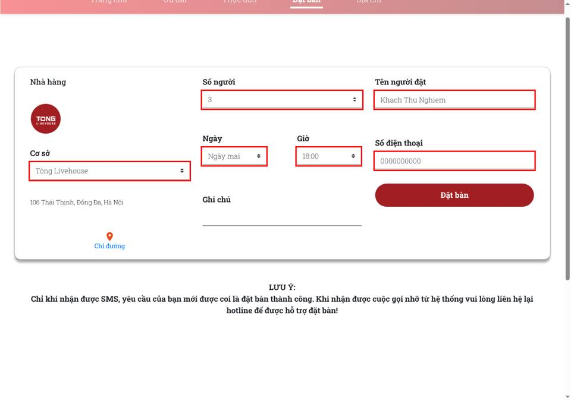</a><figcaption><div class="step-top"><span class="step-n num">Bước 7</span><span class="step-t num">giây thứ 13.2</span></div><p class="step-a">Kết thúc: form đã điền đủ. Dừng trước nút Đặt bàn, không gửi.</p><dl class=kv><dt>Cơ sở</dt><dd>Tòng Livehouse</dd><dt>Số người</dt><dd>3</dd><dt>Ngày</dt><dd>Ngày mai</dd><dt>Giờ</dt><dd>18:00</dd><dt>Tên khách</dt><dd>Khach Thu Nghiem</dd><dt>Số điện thoại</dt><dd>0000000000</dd></dl><details class="code"><summary>Lệnh script</summary><code>Kết thúc script, chờ 3 giây cho trang ổn định: trạng thái được chấm. Dừng trước nút đặt</code></details></figcaption></figure></div>
</article>
<article class="site" id="chaoxian"><div class="site-head"><h3>Chao Xian</h3><a class="mono url" href="https://chaoxian.com.vn/dat-ban" target="_blank" rel="noopener">https://chaoxian.com.vn/dat-ban</a></div><p class="site-meta"><span class="pill ok">đúng</span> Script bản <b>v1</b> điền xong trong <b class="num">10.3 giây</b>. Chạy lại bản này <b class="num">4</b> lần, đúng <b class="num">4</b> lần. Không có thông tin khách nào bị gửi ra ngoài.</p>
<div class="steps"><figure class="step"><a href="img/real_chaoxian_main_01.jpg" target="_blank" rel="noopener">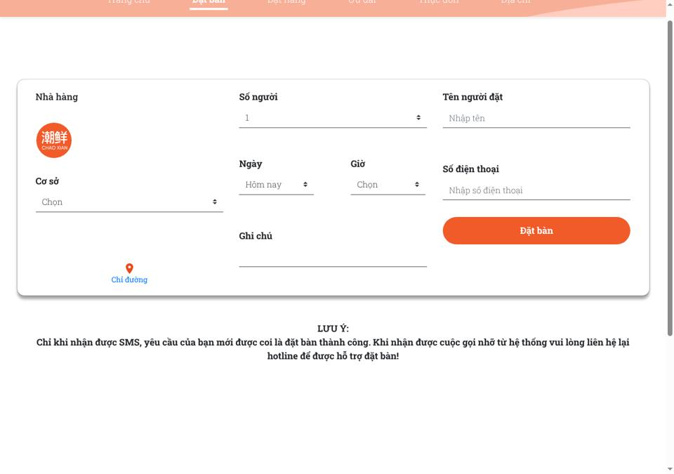</a><figcaption><div class="step-top"><span class="step-n num">Bước 1</span><span class="step-t num">giây thứ 7.6</span></div><p class="step-a">Mở trang đặt bàn. Form còn giá trị mặc định, chưa điền gì.</p><dl class=kv><dt>Cơ sở</dt><dd>Chọn</dd><dt>Số người</dt><dd>1</dd><dt>Ngày</dt><dd>Hôm nay</dd><dt>Giờ</dt><dd>Chọn</dd></dl><details class="code"><summary>Lệnh script</summary><code>Trang tải xong, script chưa điền gì (giá trị mặc định)</code></details></figcaption></figure><figure class="step"><a href="img/real_chaoxian_main_02.jpg" target="_blank" rel="noopener">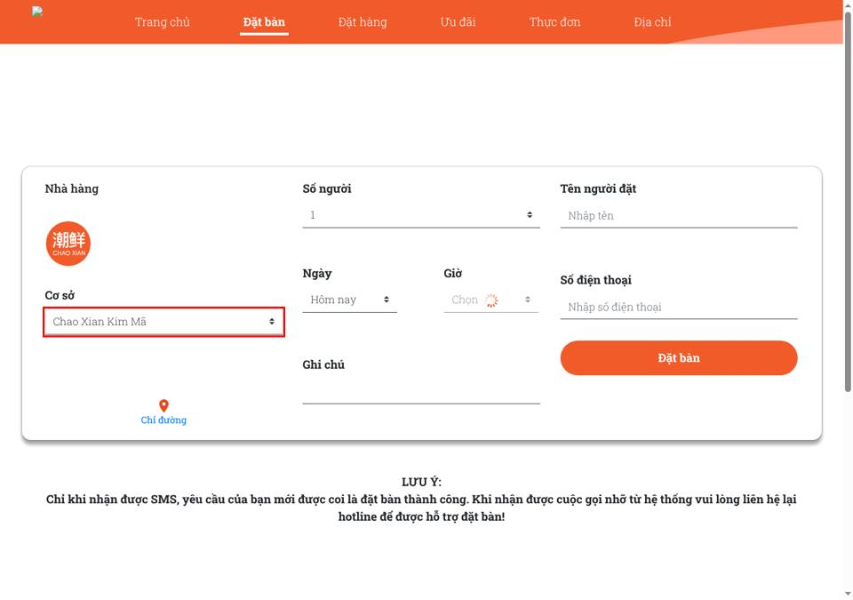</a><figcaption><div class="step-top"><span class="step-n num">Bước 2</span><span class="step-t num">giây thứ 7.9</span></div><p class="step-a">Chọn / điền cơ sở Chao Xian Kim Mã.</p><details class="code"><summary>Lệnh script</summary><code>js((()=&gt;{ const s=document.getElementById(&quot;selectCoso&quot;); s.value=&quot;68737cd823d94c3bb82bc42a&quot;; s.dispatchEvent(new Event(&#x27;in…)</code></details></figcaption></figure><figure class="step"><a href="img/real_chaoxian_main_03.jpg" target="_blank" rel="noopener"></a><figcaption><div class="step-top"><span class="step-n num">Bước 3</span><span class="step-t num">giây thứ 8.1</span></div><p class="step-a">Chọn / điền số người 3.</p><details class="code"><summary>Lệnh script</summary><code>js((()=&gt;{ const s=document.getElementById(&quot;selectSoNguoi&quot;); s.value=&quot;3&quot;; s.dispatchEvent(new Event(&#x27;input&#x27;,{bubbles:true})…)</code></details></figcaption></figure><figure class="step"><a href="img/real_chaoxian_main_04.jpg" target="_blank" rel="noopener">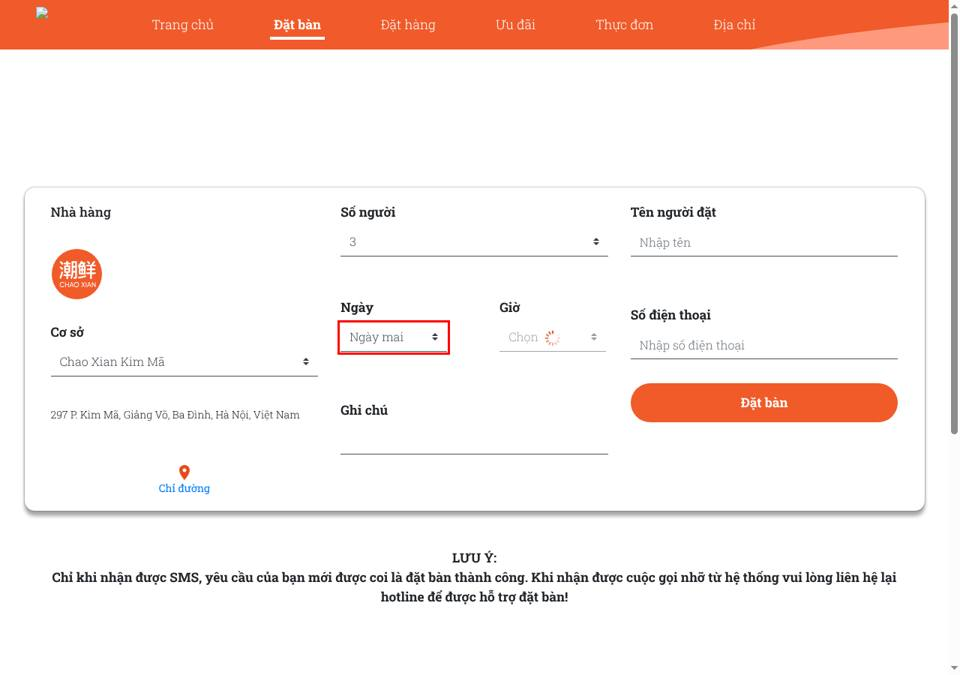</a><figcaption><div class="step-top"><span class="step-n num">Bước 4</span><span class="step-t num">giây thứ 8.4</span></div><p class="step-a">Chọn / điền ngày Ngày mai.</p><details class="code"><summary>Lệnh script</summary><code>js((()=&gt;{ const s=document.getElementById(&quot;selectDay&quot;); s.value=&quot;1&quot;; s.dispatchEvent(new Event(&#x27;input&#x27;,{bubbles:true})); s…)</code></details></figcaption></figure><figure class="step"><a href="img/real_chaoxian_main_05.jpg" target="_blank" rel="noopener"></a><figcaption><div class="step-top"><span class="step-n num">Bước 5</span><span class="step-t num">giây thứ 9.4</span></div><p class="step-a">Chọn / điền giờ 18:00.</p><details class="code"><summary>Lệnh script</summary><code>js((()=&gt;{ const s=document.getElementById(&quot;selectHour&quot;); s.value=&quot;18:00:00&quot;; s.dispatchEvent(new Event(&#x27;input&#x27;,{bubbles:tr…)</code></details></figcaption></figure><figure class="step"><a href="img/real_chaoxian_main_06.jpg" target="_blank" rel="noopener"></a><figcaption><div class="step-top"><span class="step-n num">Bước 6</span><span class="step-t num">giây thứ 9.7</span></div><p class="step-a">Gõ tên khách Khach Thu Nghiem.</p><details class="code"><summary>Lệnh script</summary><code>type_text(Khach Thu Nghiem)</code></details></figcaption></figure><figure class="step"><a href="img/real_chaoxian_main_07.jpg" target="_blank" rel="noopener"></a><figcaption><div class="step-top"><span class="step-n num">Bước 7</span><span class="step-t num">giây thứ 10.1</span></div><p class="step-a">Gõ số điện thoại 0000000000.</p><details class="code"><summary>Lệnh script</summary><code>type_text(0000000000)</code></details></figcaption></figure><figure class="step"><a href="img/real_chaoxian_main_08.jpg" target="_blank" rel="noopener"></a><figcaption><div class="step-top"><span class="step-n num">Bước 8</span><span class="step-t num">giây thứ 13.6</span></div><p class="step-a">Kết thúc: form đã điền đủ. Dừng trước nút Đặt bàn, không gửi.</p><dl class=kv><dt>Cơ sở</dt><dd>Chao Xian Kim Mã</dd><dt>Số người</dt><dd>3</dd><dt>Ngày</dt><dd>Ngày mai</dd><dt>Giờ</dt><dd>18:00</dd><dt>Tên khách</dt><dd>Khach Thu Nghiem</dd><dt>Số điện thoại</dt><dd>0000000000</dd></dl><details class="code"><summary>Lệnh script</summary><code>Kết thúc script, chờ 3 giây cho trang ổn định: trạng thái được chấm. Dừng trước nút đặt</code></details></figcaption></figure></div>
</article>
<article class="site" id="lauwang"><div class="site-head"><h3>Lẩu Wang</h3><a class="mono url" href="https://lauwang.vn/dat-ban/" target="_blank" rel="noopener">https://lauwang.vn/dat-ban/</a></div><p class="site-meta"><span class="pill ok">đúng</span> Script bản <b>v2</b> điền xong trong <b class="num">7.4 giây</b>. Chạy lại bản này <b class="num">5</b> lần, đúng <b class="num">5</b> lần. Không có thông tin khách nào bị gửi ra ngoài.</p>
<div class="steps"><figure class="step"><a href="img/real_lauwang_main_01.jpg" target="_blank" rel="noopener"></a><figcaption><div class="step-top"><span class="step-n num">Bước 1</span><span class="step-t num">giây thứ 4.0</span></div><p class="step-a">Mở trang đặt bàn. Form còn giá trị mặc định, chưa điền gì.</p><dl class=kv><dt>Giờ</dt><dd>Giờ</dd><dt>Cơ sở</dt><dd>Chọn cơ sở</dd></dl><details class="code"><summary>Lệnh script</summary><code>Trang tải xong, script chưa điền gì (giá trị mặc định)</code></details></figcaption></figure><figure class="step"><a href="img/real_lauwang_main_02.jpg" target="_blank" rel="noopener">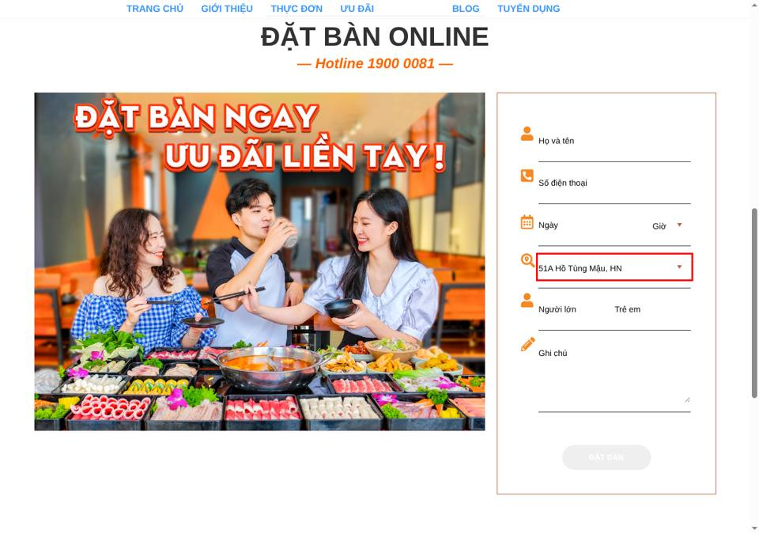</a><figcaption><div class="step-top"><span class="step-n num">Bước 2</span><span class="step-t num">giây thứ 4.4</span></div><p class="step-a">Chọn / điền cơ sở 51A Hồ Tùng Mậu, HN.</p><details class="code"><summary>Lệnh script</summary><code>js((()=&gt;{const s=document.querySelector(&quot;select[name=\&quot;address\&quot;]&quot;);if(!s)return {st:&#x27;NF&#x27;}; const w=s.closest(&#x27;.stm_select…)</code></details></figcaption></figure><figure class="step"><a href="img/real_lauwang_main_03.jpg" target="_blank" rel="noopener"></a><figcaption><div class="step-top"><span class="step-n num">Bước 3</span><span class="step-t num">giây thứ 4.8</span></div><p class="step-a">Chọn / điền ngày 26/11/2026.</p><details class="code"><summary>Lệnh script</summary><code>js((()=&gt;{const e=document.querySelector(&quot;[name=\&quot;date\&quot;]&quot;);if(!e)return &#x27;NF&#x27;; const p=e.tagName===&#x27;TEXTAREA&#x27;?HTMLTextAreaE…)</code></details></figcaption></figure><figure class="step"><a href="img/real_lauwang_main_04.jpg" target="_blank" rel="noopener"></a><figcaption><div class="step-top"><span class="step-n num">Bước 4</span><span class="step-t num">giây thứ 5.2</span></div><p class="step-a">Chọn / điền số người lớn 3.</p><details class="code"><summary>Lệnh script</summary><code>js((()=&gt;{const e=document.querySelector(&quot;input[name=\&quot;adult\&quot;]&quot;);if(!e)return &#x27;NF&#x27;; const p=e.tagName===&#x27;TEXTAREA&#x27;?HTMLTex…)</code></details></figcaption></figure><figure class="step"><a href="img/real_lauwang_main_05.jpg" target="_blank" rel="noopener"></a><figcaption><div class="step-top"><span class="step-n num">Bước 5</span><span class="step-t num">giây thứ 6.5</span></div><p class="step-a">Chọn / điền giờ 18:00.</p><details class="code"><summary>Lệnh script</summary><code>js((()=&gt;{const s=document.querySelector(&quot;select[name=\&quot;time\&quot;]&quot;);if(!s)return {st:&#x27;NF&#x27;}; const w=s.closest(&#x27;.stm_select&#x27;);…)</code></details></figcaption></figure><figure class="step"><a href="img/real_lauwang_main_06.jpg" target="_blank" rel="noopener">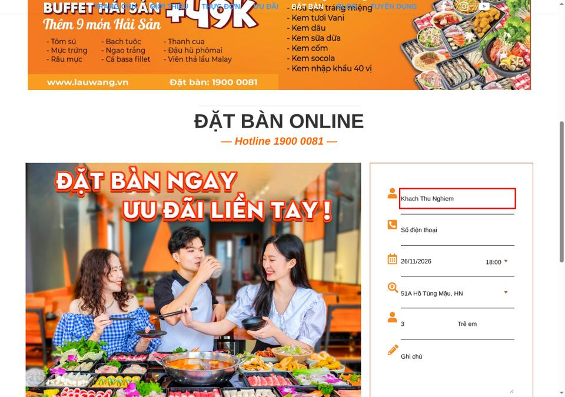</a><figcaption><div class="step-top"><span class="step-n num">Bước 6</span><span class="step-t num">giây thứ 7.0</span></div><p class="step-a">Chọn / điền tên khách Khach Thu Nghiem.</p><details class="code"><summary>Lệnh script</summary><code>js((()=&gt;{const e=document.querySelector(&quot;input[name=\&quot;your-name\&quot;]&quot;);if(!e)return &#x27;NF&#x27;; const p=e.tagName===&#x27;TEXTAREA&#x27;?HTM…)</code></details></figcaption></figure><figure class="step"><a href="img/real_lauwang_main_07.jpg" target="_blank" rel="noopener">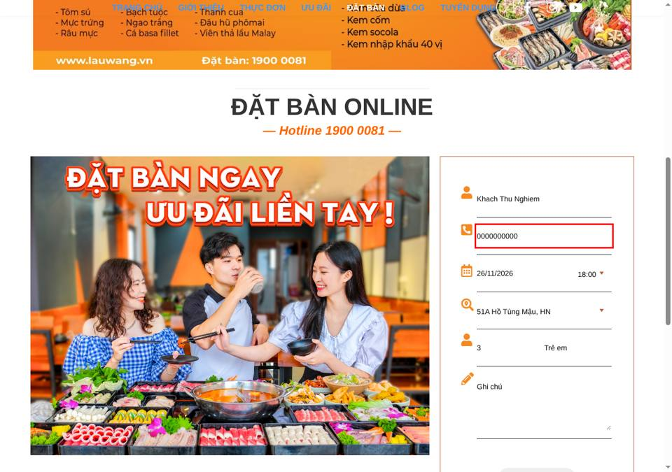</a><figcaption><div class="step-top"><span class="step-n num">Bước 7</span><span class="step-t num">giây thứ 7.4</span></div><p class="step-a">Chọn / điền số điện thoại 0000000000.</p><details class="code"><summary>Lệnh script</summary><code>js((()=&gt;{const e=document.querySelector(&quot;input[name=\&quot;phone\&quot;]&quot;);if(!e)return &#x27;NF&#x27;; const p=e.tagName===&#x27;TEXTAREA&#x27;?HTMLTex…)</code></details></figcaption></figure><figure class="step"><a href="img/real_lauwang_main_08.jpg" target="_blank" rel="noopener">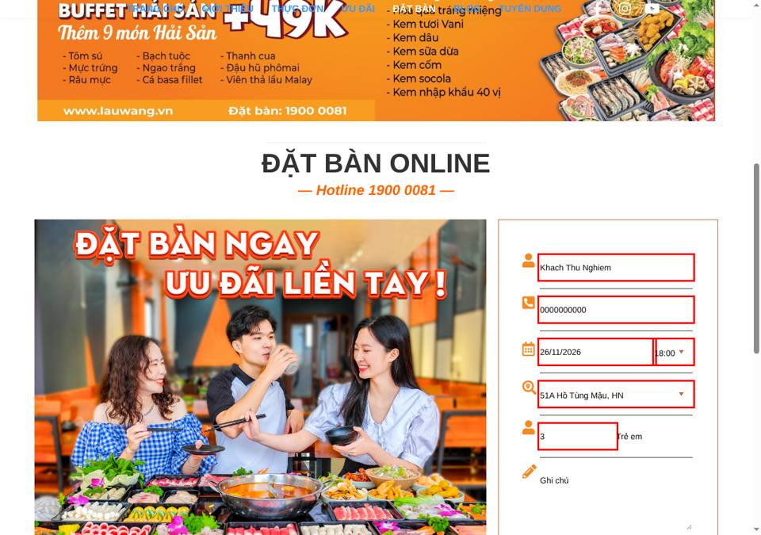</a><figcaption><div class="step-top"><span class="step-n num">Bước 8</span><span class="step-t num">giây thứ 10.9</span></div><p class="step-a">Kết thúc: form đã điền đủ. Dừng trước nút Đặt bàn, không gửi.</p><dl class=kv><dt>Tên khách</dt><dd>Khach Thu Nghiem</dd><dt>Số điện thoại</dt><dd>0000000000</dd><dt>Ngày</dt><dd>26/11/2026</dd><dt>Giờ</dt><dd>18:00</dd><dt>Cơ sở</dt><dd>51A Hồ Tùng Mậu, HN</dd><dt>Số người lớn</dt><dd>3</dd></dl><details class="code"><summary>Lệnh script</summary><code>Kết thúc script, chờ 3 giây cho trang ổn định: trạng thái được chấm. Dừng trước nút đặt</code></details></figcaption></figure></div>
</article>
<article class="site" id="kingbbq"><div class="site-head"><h3>King BBQ</h3><a class="mono url" href="https://kingbbq.vn/dat-ban/" target="_blank" rel="noopener">https://kingbbq.vn/dat-ban/</a></div><p class="site-meta"><span class="pill ok">đúng</span> Script bản <b>v2</b> điền xong trong <b class="num">30.4 giây</b>. Chạy lại bản này <b class="num">5</b> lần, đúng <b class="num">5</b> lần. Không có thông tin khách nào bị gửi ra ngoài.</p>
<div class="steps"><figure class="step"><a href="img/real_kingbbq_main_01.jpg" target="_blank" rel="noopener">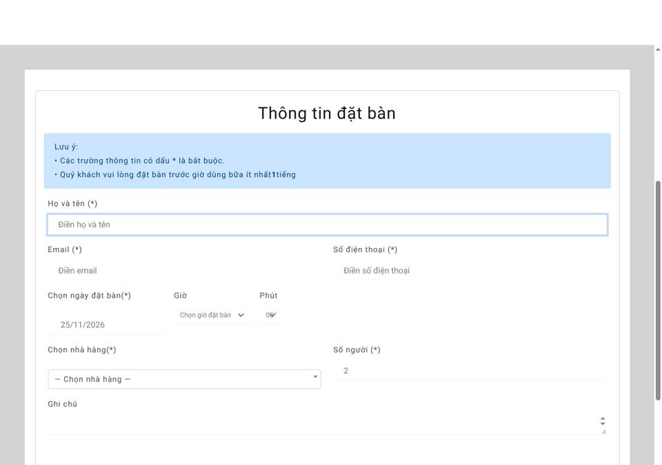</a><figcaption><div class="step-top"><span class="step-n num">Bước 1</span><span class="step-t num">giây thứ 20.2</span></div><p class="step-a">Mở trang đặt bàn. Form còn giá trị mặc định, chưa điền gì.</p><dl class=kv><dt>Ngày</dt><dd>25/11/2026</dd><dt>Giờ</dt><dd>Chọn giờ đặt bàn</dd><dt>Phút</dt><dd>00 ‘</dd><dt>Nhà hàng</dt><dd>— Chọn nhà hàng —</dd><dt>Số người</dt><dd>2</dd></dl><details class="code"><summary>Lệnh script</summary><code>Trang tải xong, script chưa điền gì (giá trị mặc định)</code></details></figcaption></figure><figure class="step"><a href="img/real_kingbbq_main_02.jpg" target="_blank" rel="noopener">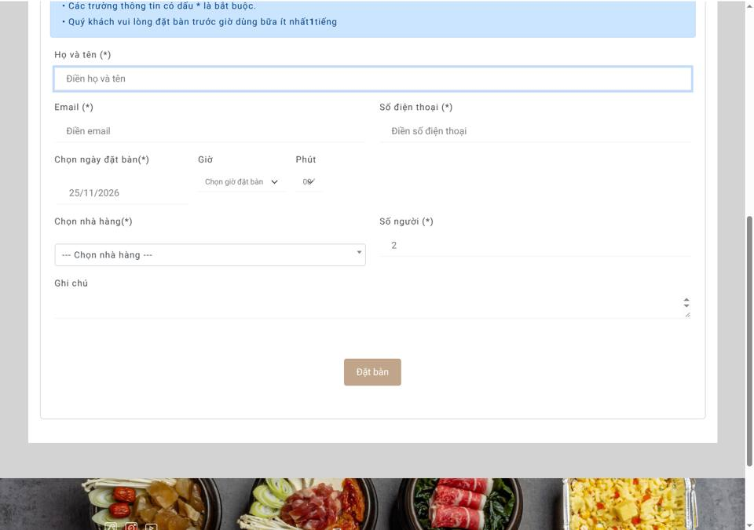</a><figcaption><div class="step-top"><span class="step-n num">Bước 2</span><span class="step-t num">giây thứ 21.6</span></div><p class="step-a">Chọn / điền nhà hàng --- Chọn nhà hàng ---.</p><details class="code"><summary>Lệnh script</summary><code>js([...document.getElementById(&#x27;inputRestaurant&#x27;).options].map(o=&gt;o.value+&#x27;|&#x27;+o.text).join(&#x27;;&#x27;))</code></details></figcaption></figure><figure class="step"><a href="img/real_kingbbq_main_03.jpg" target="_blank" rel="noopener"></a><figcaption><div class="step-top"><span class="step-n num">Bước 3</span><span class="step-t num">giây thứ 22.5</span></div><p class="step-a">Chọn / điền nhà hàng King Deli1 Bà Triệu - Tầng 5, Vincom Center, 191 Bà Triệu, Hai Bà Trưng, Hà Nội.</p><details class="code"><summary>Lệnh script</summary><code>js((()=&gt;{const s=document.getElementById(&quot;inputRestaurant&quot;); const o=[...s.options].find(o=&gt;(o.value===&#x27;48&#x27;)); if(!o)retur…)</code></details></figcaption></figure><figure class="step"><a href="img/real_kingbbq_main_04.jpg" target="_blank" rel="noopener"></a><figcaption><div class="step-top"><span class="step-n num">Bước 4</span><span class="step-t num">giây thứ 23.3</span></div><p class="step-a">Gõ ngày 26/11/2026.</p><details class="code"><summary>Lệnh script</summary><code>type_text(26/11/2026)</code></details></figcaption></figure><figure class="step"><a href="img/real_kingbbq_main_05.jpg" target="_blank" rel="noopener">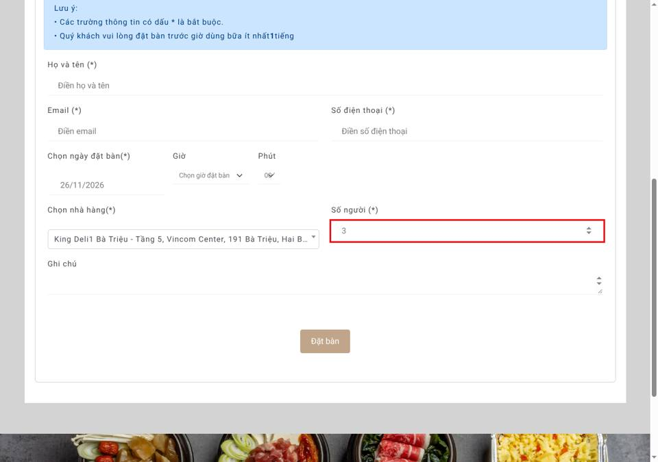</a><figcaption><div class="step-top"><span class="step-n num">Bước 5</span><span class="step-t num">giây thứ 24.4</span></div><p class="step-a">Gõ số người 3.</p><details class="code"><summary>Lệnh script</summary><code>type_text(3)</code></details></figcaption></figure><figure class="step"><a href="img/real_kingbbq_main_06.jpg" target="_blank" rel="noopener"></a><figcaption><div class="step-top"><span class="step-n num">Bước 6</span><span class="step-t num">giây thứ 25.5</span></div><p class="step-a">Gõ tên khách Khach Thu Nghiem.</p><details class="code"><summary>Lệnh script</summary><code>type_text(Khach Thu Nghiem)</code></details></figcaption></figure><figure class="step"><a href="img/real_kingbbq_main_07.jpg" target="_blank" rel="noopener">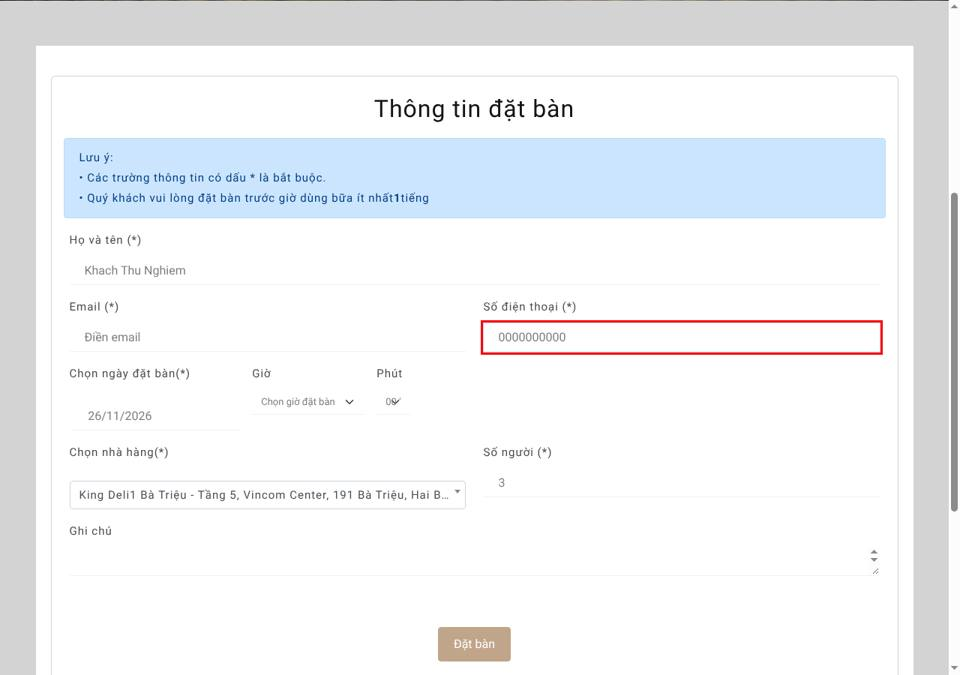</a><figcaption><div class="step-top"><span class="step-n num">Bước 7</span><span class="step-t num">giây thứ 26.1</span></div><p class="step-a">Gõ số điện thoại 0000000000.</p><details class="code"><summary>Lệnh script</summary><code>type_text(0000000000)</code></details></figcaption></figure><figure class="step"><a href="img/real_kingbbq_main_08.jpg" target="_blank" rel="noopener">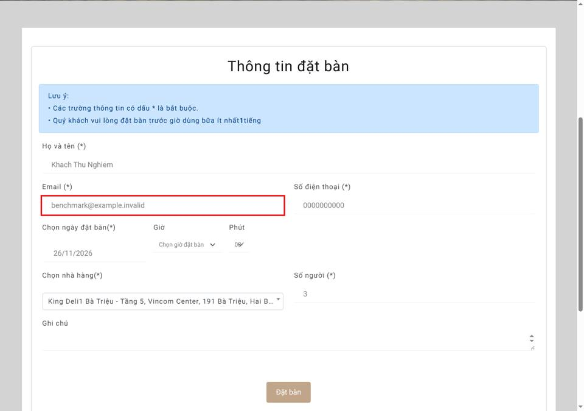</a><figcaption><div class="step-top"><span class="step-n num">Bước 8</span><span class="step-t num">giây thứ 26.7</span></div><p class="step-a">Gõ email benchmark@example.invalid.</p><details class="code"><summary>Lệnh script</summary><code>type_text(benchmark@example.invalid)</code></details></figcaption></figure><figure class="step"><a href="img/real_kingbbq_main_09.jpg" target="_blank" rel="noopener">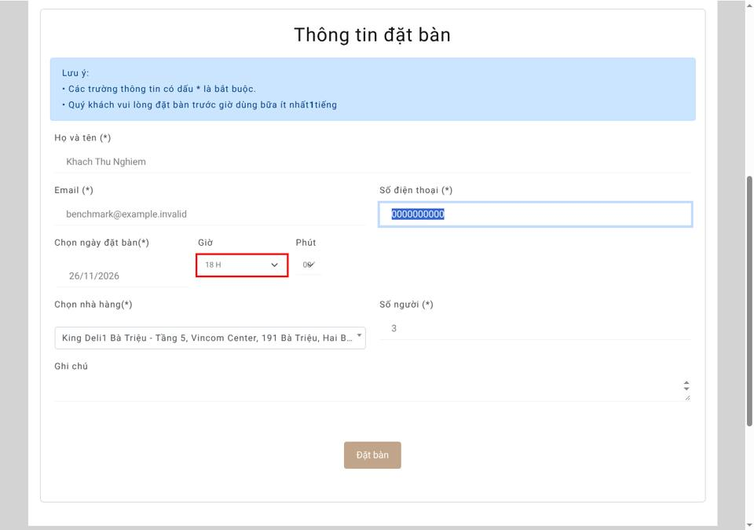</a><figcaption><div class="step-top"><span class="step-n num">Bước 9</span><span class="step-t num">giây thứ 28.5</span></div><p class="step-a">Chọn / điền giờ 18 H.</p><details class="code"><summary>Lệnh script</summary><code>js((()=&gt;{const s=document.getElementById(&quot;inputHour&quot;); const o=[...s.options].find(o=&gt;(o.value===&quot;18&quot;)); if(!o)return &#x27;NOT…)</code></details></figcaption></figure><figure class="step"><a href="img/real_kingbbq_main_10.jpg" target="_blank" rel="noopener">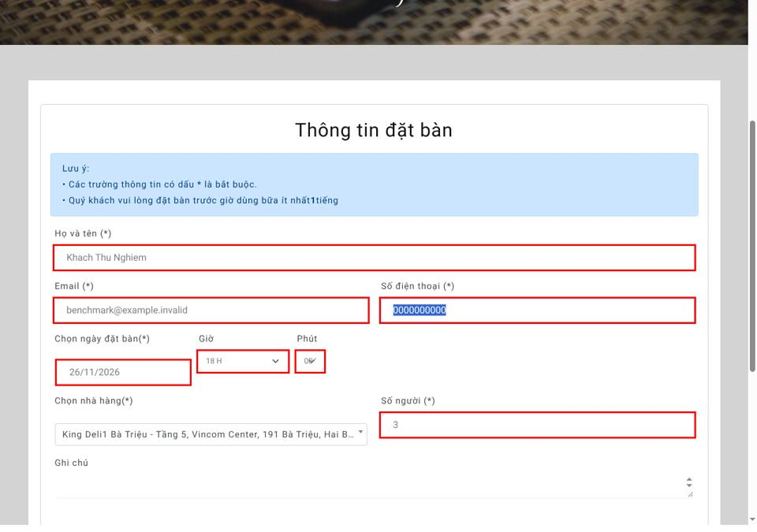</a><figcaption><div class="step-top"><span class="step-n num">Bước 10</span><span class="step-t num">giây thứ 33.7</span></div><p class="step-a">Kết thúc: form đã điền đủ. Dừng trước nút Đặt bàn, không gửi.</p><dl class=kv><dt>Tên khách</dt><dd>Khach Thu Nghiem</dd><dt>Email</dt><dd>benchmark@example.invalid</dd><dt>Số điện thoại</dt><dd>0000000000</dd><dt>Ngày</dt><dd>26/11/2026</dd><dt>Giờ</dt><dd>18 H</dd><dt>Phút</dt><dd>00 ‘</dd><dt>Nhà hàng</dt><dd>King Deli1 Bà Triệu - Tầng 5, Vincom Center, 191 Bà Triệu, Hai Bà Trưng, Hà Nội</dd><dt>Số người</dt><dd>3</dd></dl><details class="code"><summary>Lệnh script</summary><code>Kết thúc script, chờ 3 giây cho trang ổn định: trạng thái được chấm. Dừng trước nút đặt</code></details></figcaption></figure></div>
<details class="bad-run"><summary><span class="pill warn">từ chối</span> Xem một lần script bản v1 từ chối: danh sách nhà hàng chưa tải xong nên không tìm thấy chi nhánh</summary><div class="steps"><figure class="step"><a href="img/real_kingbbq_run_loi_01.jpg" target="_blank" rel="noopener"></a><figcaption><div class="step-top"><span class="step-n num">Bước 1</span><span class="step-t num">giây thứ 5.9</span></div><p class="step-a">Mở trang đặt bàn. Form còn giá trị mặc định, chưa điền gì.</p><dl class=kv><dt>Ngày</dt><dd>25/11/2026</dd><dt>Giờ</dt><dd>Chọn giờ đặt bàn</dd><dt>Phút</dt><dd>00 ‘</dd><dt>Nhà hàng</dt><dd>— Chọn nhà hàng —</dd><dt>Số người</dt><dd>2</dd></dl><details class="code"><summary>Lệnh script</summary><code>Trang tải xong, script chưa điền gì (giá trị mặc định)</code></details></figcaption></figure><figure class="step"><a href="img/real_kingbbq_run_loi_02.jpg" target="_blank" rel="noopener"></a><figcaption><div class="step-top"><span class="step-n num">Bước 2</span><span class="step-t num">giây thứ 9.1</span></div><p class="step-a">Kết thúc: form đã điền đủ. Dừng trước nút Đặt bàn, không gửi.</p><dl class=kv><dt>Ngày</dt><dd>25/11/2026</dd><dt>Giờ</dt><dd>Chọn giờ đặt bàn</dd><dt>Phút</dt><dd>00 ‘</dd><dt>Nhà hàng</dt><dd>--- Chọn nhà hàng ---</dd><dt>Số người</dt><dd>2</dd></dl><details class="code"><summary>Lệnh script</summary><code>Kết thúc script, chờ 3 giây cho trang ổn định: trạng thái được chấm. Dừng trước nút đặt</code></details></figcaption></figure></div></details>
</article>
</section>
<section id="luu-y"><h2>Lưu ý</h2><ul class="todo">
<li><b>2 lượt Haiku ở Lẩu Wang chưa chấm được.</b> Chương trình chấm không đọc được ô giờ của web này nên không biết Haiku chọn đúng giờ hay không. Lỗi hiển thị ở Lẩu Wang (mục Sửa script) có thể là nguyên nhân, nhưng chưa kiểm chứng.</li>
<li><b>Script bản v2 chưa được đo lại thời gian và chi phí</b> theo đúng quy trình ngày 24/11; mới chạy lại để kiểm tra đúng/sai.</li>
<li><b>Claude Sonnet 5.5 chưa được đo</b> trên web thật vì không đủ ngân sách.</li>
<li><b>Mỗi web chỉ đo 5 vòng</b>, ít hơn 11 vòng theo kế hoạch ban đầu. Máy đo ngày 24/11 rất bận, nên số giây chỉ nên dùng để so sánh giữa các cách.</li>
<li><b>Chưa bấm nút Đặt bàn và chưa nhận mã OTP thật</b> của nhà hàng, vì cố ý không tạo đơn thật.</li>
</ul>
<p class="foot">Sinh bởi <span class="mono">bench/llm/html_report.py</span> từ dữ liệu trong <span class="mono">results/llm/</span>. Báo cáo kỹ thuật: <span class="mono">reports/llm.md</span>.</p></section></main>